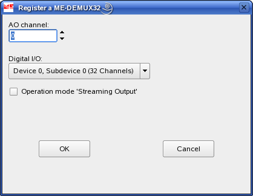

The Meilhaus Intelligent Device Configuration Utility (ME-iDC) offers you extensive features for service and configuration in combination with the Meilhaus Intelligent Driver System (ME-iDS). The usage is optional. Please terminate any process accessing the driver system before running this utility!
Main Features:
The following is a screenshot of the main window of the utility.
In the next few chapters we will describe the functionallity of the configuration utility.
In order to move a device entry up or down in the device list please select a device entry from the device list by a left click. With a right click on the selected device entry a popup menu appears with the appropriate commands to move the device entry up or down.
Before you can delete a device entry you have to physically remove it from your system. After a reboot of the system the device entry is marked by a red cross in the device list (it can be used like a "memory function"). To delete the entry completely select the device entry from the device list by a left click. With a right click on the selected device entry a popup menu appears with the appropriate command to delete the device entry.
In order to simplify programming the ME-MultiSig system you can register a ME-MUX32-M device under an "AI" subdevice. Navigate to the subdevice entry in the configuration tree and select it by a left click. With a right click on the selected subdevice entry a popup menu appears with the appropriate command to register a ME-MUX32-M device.
If you select the menu entry to register a ME-MUX32-M the following dialog is shown. Here you can select the analog input channel you want to connect your ME-MUX32-M device to, the "DIO" subdevice you want to use to control your ME-MUX32-M and whether you want to use the streaming operation mode (timer controlled) if applicable.
After you have registered a ME-MUX32-M it is appended to the sub-tree of the subdevice.
In order to edit ME-MUX32-M settings or to delete a ME-MUX32-M please select the ME-MUX32-M entry by a left click. With a right click on the selected ME-MUX32-M entry a popup menu appears with the appropriate commands.
In order to register a ME-MUX32-S within a ME-MUX32-S(lave) list of a MUX-chain navigate to the ME-MUX32-S list in the configuration tree and select it by a left click. With a right click on the selected ME-MUX32-S list a popup menu appears with the appropriate command. You can register a maximum number of 7 ME-MUX32-S boards.
If you add a ME-MUX32-S device entry, it is appended to the ME-MUX32-S list.
In order to delete a ME-MUX32-S entry from a ME-MUX32-S list select the ME-MUX32-S entry by a left click. With a right click on the selected ME-MUX32-S entry a popup menu appears with the appropriate command.
You can register a ME-DEMUX32 within an "AO" subdevice. Navigate to the subdevice entry in the configuration tree and select it by a left click. With a right click on the selected subdevice entry a popup menu appears with the appropriate command to register a ME-DEMUX32 device.
If you selected the menu entry to register a ME-DEMUX32 a dialog is shown. Here you can select the analog output channel you want to connect your ME-DEMUX32 device to, the "DIO" subdevice you want to use to control the ME-DEMUX32 whether you want to use streaming operation mode (timer controlled) if applicable.

After you registered a ME-DEMUX32 it is appended to the sub-tree of the subdevice.
In order to edit the ME-DEMUX32 settings or to delete a ME-DEMUX32 entry select the ME-DEMUX32 entry by a left click. With a right click on the selected ME-DEMUX32 entry a popup menu appears with the appropriate commands.
It is possible to increase the channel count of a ME-1000/64 from 64 to 128 channels by adding a ME-1001 extension board (= ME-1000/128). Thus you can inform the driver system about the number of channels (and subdevices) of your ME-1000 because of the driver system is not able to detect the extension by itself.
In order to do this select the subdevice list of the ME-1000 in the configuration tree by a left click. With a right click on the selected subdevice list a popup menu appears with the appropriate command.
If you add the ME-1001 extension board two additional "DIO" subdevices will be appended to the subdevice list of the ME-1000.
In order to delete a ME-1001 extension board select the subdevice list of the ME-1000 in the configuration tree by a left click. With a right click on the selected subdevice list a popup menu appears with the appropriate command. If you delete the ME-1001 extension board the two additional subdevice entries in the subdevice list of the ME-1000 are deleted.
In order to register a remote device like the ME-Synapse LAN available through ethernet please select the device list by a left click. With a right click on the selected device list a popup menu appears with the appropriate command to register a remote device.
Next a wizard is started.
First you have to provide the IP address or the DNS name of the remote host which carries the device to register. If done please press the "Next" button.
Next you have to select a device from the list which you want to register. If done please press the "Finish" button. Next the newly added remote device will be shown in the device list.
In order to delete a remote device please select the remote device in the device list by a left click. With a right click on the selected remote device a popup menu appears providing the appropriate command to delete the remote device.